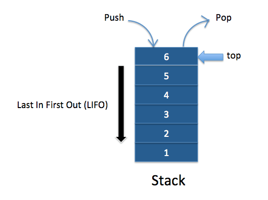
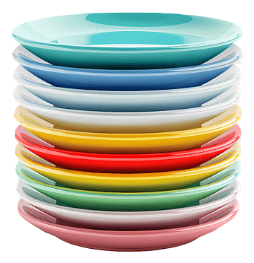
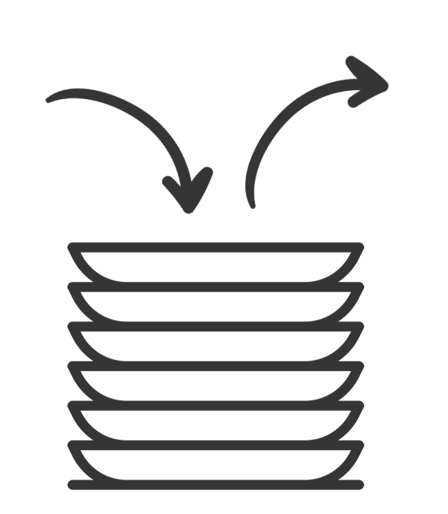

What is a Stack?
A stack is a linear data structure that follows the Last-In-First-Out (LIFO) principle, where the last element added is the first one to be removed. It is like a real-life stack of objects, where items are placed on top of one another, and you can only remove the item on the top.

Principle of Stack (LIFO):
The stack operates based on the LIFO (Last-In-First-Out) principle. This means:
- The last element that is added to the stack will be the first one to be removed.
Example: Imagine a stack of plates in a kitchen. If you place several plates one by one on top of each other, to get a plate, you have to remove the last one placed first.
Understanding the Stack Process
stack is a simple structure used to store data, and it follows a specific rule for how items are added and removed: Last In, First Out (LIFO). Let’s break down the parts and how the stack process works.
- Stack Structure:
The stack can be visualized as a vertical container where you can add items (like books, plates, or data), but you can only add or remove them from the top. Think of it as a pile of items where you can't pull something out from the middle—only the top item can be interacted with. - Top of the Stack
The top of the stack refers to the most recent item added. It’s the only item you can remove or check. If you keep adding items to the stack, the top changes to the latest item added.
Real-Time Examples of Stack
Stacks are commonly used in various real-world applications where a last-in, first-out (LIFO) data structure is needed. Some examples include:
- Function Call Stack: When a function is invoked, its parameters and return address are pushed onto the function call stack, allowing the function to execute and return in reverse order.
- Undo/Redo Operations: Applications like text editors and web browsers utilize stacks to manage undo and redo functionalities.
- Browser History: Web browsers maintain a stack of visited pages, allowing users to navigate back to previously viewed pages.
- Expression Evaluation: Compilers and interpreters use stacks to evaluate expressions in postfix notation.
- Call Stack in Recursion: Recursive function calls are managed using a stack, with each call pushed onto the stack until the base case is reached.
Key Operations of a Stack:
- Push: The operation used to add an item to the top of the stack. When you push an item onto the stack, it becomes the new top item, and any previously top items are now below it.
- Pop: The operation used to remove the item from the top of the stack. When you pop an item, you take it off the stack and reduce its size by one.
- Peek (or Top): The operation that allows you to view the item at the top of the stack without removing it.
- IsEmpty: A check that determines whether the stack has any items in it. This operation returns true if the stack is empty and false if it contains items.
- Size: The operation that returns the number of items currently in the stack.
A Real-World Example
- Push: Add an element to the top of the stack.
Example: Adding a plate to the top of the stack. - Pop: Remove the top element from the stack.
Example: Taking the top plate from the stack. - Peek/Top: View the top element of the stack without removing it.
Example: Checking the plate at the top of the stack without taking it. - isEmpty: Check if the stack is empty.
Example: If no plates are left in the stack. - isFull: Check if the stack is full (in case of a stack with limited size).
Example: The stack of plates is full when no more plates can be added.

Implementation of Stack
A stack can be implemented in various ways, primarily using:
- Array: A fixed-size array can be used to store stack elements, with a variable to track the top of the stack.
- Usage: Simple and efficient for a known maximum size.
- Drawbacks: Limited by the fixed size of the array. If the stack exceeds this size, it may lead to overflow.
- Linked List: A dynamic approach using nodes, where each node points to the next, allowing for easy addition and removal of elements without a fixed size.
- Usage: More flexible as it can grow or shrink dynamically.
- Drawbacks: More memory overhead due to the need to store pointers with each node. Also, performance may be slower due to additional pointer management.
Comparison of Stack Implementation: Array vs Linked List
| Aspect | Stack Using Array | Stack Using Linked List |
|---|---|---|
| Memory Allocation | Fixed size (must define size at the start). | Dynamic size (grows and shrinks as needed). |
| Space Efficiency | May waste memory if the array is not full (fixed size). | More space-efficient, but each node requires extra memory for a pointer. |
| Overflow Condition | Can occur if the stack is full (even if memory is available). | No overflow unless system memory is exhausted. |
| Underflow Condition | Occurs if the stack is empty when trying to pop an element. | Occurs if the stack is empty when trying to pop an element. |
| Time Complexity for Push | O(1) (amortized for dynamic arrays, always O(1) for fixed arrays). | O(1), since a new node is added at the top of the list. |
| Time Complexity for Pop | O(1), just removing the top element from the array. | O(1), simply removes the top node of the linked list. |
| Time Complexity for Peek | O(1), accessing the top element in constant time. | O(1), top node is immediately accessible. |
| Resize Operations | Needs resizing (copying array to a larger/smaller one) when the stack exceeds its initial capacity. | No need for resizing, dynamically adjusts size by adding or removing nodes. |
| Memory Overhead | Minimal overhead since only the array itself is stored. | Higher memory overhead because each node needs extra memory for the pointer. |
| Implementation Simplicity | Easier to implement, with fewer pointers and memory management. | Slightly more complex due to the need for handling node pointers. |
| Random Access | Allows random access to elements via index (though not typical in stack operations). | No random access, traversal needed to access middle elements. |
| Cache Efficiency | Better cache performance due to contiguous memory allocation. | Poorer cache performance since nodes are scattered in memory. |
| Flexibility | Size is fixed unless resized dynamically (requires extra handling). | Fully flexible, grows/shrinks automatically with operations. |
| Best Suited For | When the maximum size of the stack is known in advance and memory is a constraint. | When the number of elements is unknown or frequently changes. |
Implementing a Stack Using an Array
To create a stack with an array, we start by initializing an array and using its end as the top of the stack. We’ll implement four main operations: push (to add an item), pop (to remove an item), peek (to check the top item), and isEmpty (to check if the stack is empty). We also need to handle situations when the stack is empty or full.
Step-by-Step Approach:
- Initialize an array to represent the stack.
- Use the end of the array to represent the top of the stack.
- Implement push, pop, peek, and isEmpty operations while ensuring we check for empty or full stack conditions.
Combined Stack Operations Algorithm
- Initialize the stack with a specified capacity.
- For push: Check if the stack is full. If not, increment the top and add the item.
- For pop: Check if the stack is empty. If not, return the item at the top and decrement the top.
- For peek: Check if the stack is empty. If not, return the item at the top.
- For isEmpty: Check if the top is -1; if yes, return true; otherwise, return false.
Implementation Example
Here is a simple C program to demonstrate the array implementation of a stack:
#include <limits.h>
#include <stdio.h>
#include <stdlib.h>
// Structure to represent a stack
struct Stack {
int top;
unsigned capacity;
int* array;
};
// Function to create a stack of given capacity
struct Stack* createStack(unsigned capacity) {
struct Stack* stack = (struct Stack*)malloc(sizeof(struct Stack));
stack->capacity = capacity;
stack->top = -1;
stack->array = (int*)malloc(stack->capacity * sizeof(int));
return stack;
}
// Push operation
void push(struct Stack* stack, int item) {
if (stack->top == stack->capacity - 1) return; // Check if stack is full
stack->array[++stack->top] = item; // Increment top and add item
printf("%d pushed to stack\n", item);
}
// Pop operation
int pop(struct Stack* stack) {
if (stack->top == -1) return INT_MIN; // Check if stack is empty
return stack->array[stack->top--]; // Return top item and decrement top
}
// Peek operation
int peek(struct Stack* stack) {
if (stack->top == -1) return INT_MIN; // Check if stack is empty
return stack->array[stack->top]; // Return top item
}
// isEmpty operation
int isEmpty(struct Stack* stack) {
return stack->top == -1; // Return true if stack is empty
}
// Main function to test the stack operations
int main() {
struct Stack* stack = createStack(100); // Create a stack of capacity 100
push(stack, 10); // Push 10 to stack
push(stack, 20); // Push 20 to stack
push(stack, 30); // Push 30 to stack
printf("%d popped from stack\n", pop(stack)); // Pop item from stack
return 0;
}
Output
10 pushed to stack
20 pushed to stack
30 pushed to stack
30 popped from stack
click here for Online compiler
Code Explanation:
#include <limits.h>:
Includes the limits header to useINT_MINfor error handling.#include <stdio.h>:
Includes the standard input-output header for printf.#include <stdlib.h>:
Includes the standard library for memory allocation functions.struct Stack:
Defines a structure to represent a stack withtop,capacity, andarrayattributes.createStack(unsigned capacity):
Function to create a stack of a given capacity. Allocates memory for the stack and initializes its attributes.isFull(struct Stack* stack):
Function to check if the stack is full by comparingtopwithcapacity - 1.isEmpty(struct Stack* stack):
Function to check if the stack is empty by checking iftopis -1.push(struct Stack* stack, int item):
Adds an item to the stack if it’s not full. Increments thetopand assigns theitemto the stack’sarray.pop(struct Stack* stack):
Removes and returns the item from the top of the stack if it’s not empty. Decrements thetop.peek(struct Stack* stack):
Returns the top item without removing it, checking if the stack is empty first.main():
Tests the stack operations by creating a stack and pushing/removing items.
Complexity Analysis:
Time Complexity:
- Push: O(1)
- Pop: O(1)
- Peek: O(1)
- isEmpty: O(1)
Auxiliary Space: O(n) (where n is the number of items in the stack).
Summary
In this implementation, we define an array to represent the stack and use a variable called top to keep track of the index of the top element in the stack.
To add an item to the stack (push operation), we first check if the stack is full. If it's not full, we increment the top index and place the new item at that position in the array.
To remove an item from the stack (pop operation), we check if the stack is empty. If it’s not empty, we remove the top element by returning the value at the top index and then decrement the top index.
Advantages of Array Implementation:
- Simple to implement.
- Saves memory as it doesn’t use pointers.
Disadvantages of Array Implementation:
- Not dynamic; it cannot grow or shrink based on needs during runtime (but in some programming languages like C++, Python, or Java, dynamic-sized arrays can be used to make stacks grow or shrink).
- The total size of the stack must be defined in advance.
Implementing a Stack Using a Singly Linked List
A stack consists of a top pointer, which acts as the "head" of the stack. This is where the insertion and deletion of items occur. The first node has a null value in the link field, while the second node's link points to the first node, and so forth. The address of the last node is stored in the “top” pointer.
The main advantage of using a linked list for stack implementation is the ability to grow or shrink the stack dynamically as needed. In contrast, an array-based implementation restricts the stack's maximum capacity, which could lead to stack overflow. Here, each new node is allocated dynamically, thus eliminating overflow issues.
Stack Operations
- push(): Insert a new element into the stack by adding it to the beginning of the linked list.
- pop(): Remove and return the top element of the stack by deleting the first element from the linked list.
- peek(): Return the top element without removing it.
- display(): Print all elements in the stack.
Operations and their Algorithms:
1. Initialize Stack: Create an empty stack and set the top pointer to null.
2. Push Operation:
a) Create a new node.
b) Set the node's data to the given value.
c) Link this new node to the current top of the linked list.
d) Update the top pointer to the new node.
3. Pop Operation:
a) Check if the stack is empty. If empty, return an underflow message.
b) Use a temporary pointer to store the top node.
c) Move the top pointer to the next node.
d) Free the memory of the temporary node.
4. Peek Operation:
a) Check if the stack is empty. If empty, return an error.
b) Otherwise, return the data of the top node.
5. Display Operation:
a) Initialize a temporary pointer to the top of the stack.
b) Traverse the stack using the temporary pointer until it reaches null.
c) Print the data of each node during traversal.
Time Complexity: O(1) for all operations (push, pop, peek, display).
Space Complexity: O(N) where N is the number of elements in the stack.
Implementation Code
// C program to implement a stack using singly linked list
#include <limits.h>
#include <stdio.h>
#include <stdlib.h>
// Struct representing a node in the linked list
typedef struct Node {
int data;
struct Node* next;
} Node;
Node* createNode(int new_data) {
Node* new_node = (Node*)malloc(sizeof(Node));
new_node->data = new_data;
new_node->next = NULL;
return new_node;
}
// Struct to implement stack using a singly linked list
typedef struct Stack {
Node* head;
} Stack;
// Constructor to initialize the stack
void initializeStack(Stack* stack) { stack->head = NULL; }
// Function to check if the stack is empty
int isEmpty(Stack* stack) {
return stack->head == NULL; // If head is NULL, the stack is empty
}
// Function to push an element onto the stack
void push(Stack* stack, int new_data) {
Node* new_node = createNode(new_data);
if (!new_node) {
printf("\nStack Overflow");
return;
}
new_node->next = stack->head; // Link the new node to the current top
stack->head = new_node; // Update the top to the new node
}
// Function to remove the top element from the stack
void pop(Stack* stack) {
if (isEmpty(stack)) {
printf("\nStack Underflow\n");
return;
} else {
Node* temp = stack->head; // Assign current top to a temporary variable
stack->head = stack->head->next; // Update top to the next node
free(temp); // Deallocate memory of the old top node
}
}
// Function to return the top element of the stack
int peek(Stack* stack) {
if (!isEmpty(stack))
return stack->head->data; // Return top element if stack is not empty
else {
printf("\nStack is empty");
return INT_MIN; // Return a sentinel value if stack is empty
}
}
// Driver program to test the stack implementation
int main() {
Stack stack;
initializeStack(&stack);
// Push elements onto the stack
push(&stack, 11);
push(&stack, 22);
push(&stack, 33);
push(&stack, 44);
// Print top element of the stack
printf("Top element is %d\n", peek(&stack));
// Remove two elements from the top
printf("Removing two elements...\n");
pop(&stack);
pop(&stack);
// Print top element of the stack
printf("Top element is %d\n", peek(&stack));
return 0;
}
Output
Top element is 44
Top element is 22
Complexity Analysis
Time Complexity:
O(1) for all operations (push, pop, and peek) as we do not traverse the list; operations are performed using the current pointer.
Auxiliary Space:
O(N), where N is the size of the stack.
Summary
In this implementation, we define a Node struct to represent each node in the linked list and a Stack struct that utilizes this node struct to implement the stack. The head attribute of the Stack struct points to the top of the stack (the first node in the linked list).
To add an item to the stack, we create a new node with the specified item and link its next pointer to the current head of the stack, then set the head of the stack to the new node, making it the new top.
To remove an item from the stack, we simply update the head of the stack to the next node in the list and return the data from the original head node.
Benefits of Using a Singly Linked List for Stack Implementation
- Dynamic Memory Allocation: The stack can grow or shrink dynamically without needing a predetermined fixed size.
- Efficient Memory Usage: Nodes in a singly linked list use less memory compared to doubly linked lists, as they only have a next pointer.
- Easy Implementation: The implementation is straightforward, requiring only a few lines of code.
- Versatile: Singly linked lists can also be utilized to implement other data structures such as queues and trees.
Stack Variants
1. Simple Stack
Definition: A basic stack that follows the Last-In-First-Out (LIFO) principle.
Principle: The last element added is the first one to be removed.
Operations: Push, Pop, Peek, isEmpty, isFull.
2. Doubly Ended Stack (Deque)
Definition: A stack where elements can be added and removed from both ends.
Principle: Supports both LIFO and FIFO operations.
Operations: Push, Pop, AddFront, AddBack, RemoveFront, RemoveBack.
3. Circular Stack
Definition: A stack that operates in a circular manner, efficiently using memory.
Principle: Once the stack is full, the next push operation starts from the beginning.
Operations: Push, Pop, Peek, isEmpty.
4. Linked List-based Stack
Definition: A stack implemented using a linked list for dynamic memory allocation.
Principle: Allows for unlimited growth as long as memory is available.
Operations: Push, Pop, Peek, isEmpty.
5. Multi-stack
Definition: A collection of multiple stacks within a single data structure.
Principle: Efficiently manages more than one stack simultaneously.
Operations: Push, Pop for each stack, isEmpty for each stack.
6. Min/Max Stack
Definition: An extended stack that keeps track of the minimum or maximum element.
Principle: Returns the min or max element in constant time.
Operations: Push, Pop, Peek, getMin(), getMax().
7. Fixed-size Stack
Definition: A stack with a predetermined fixed size, implemented using arrays.
Principle: Operations are limited by the stack's size, leading to overflow if full.
Operations: Push, Pop, Peek, isEmpty, isFull.
8. Persistent Stack
Definition: A stack variant where every operation creates a new version.
Principle: Maintains immutability, useful in functional programming.
Operations: Push, Pop, Peek, versioning functions.
9. Parallel Stack
Definition: A stack designed for concurrent operations in multi-threaded environments.
Principle: Ensures safe access by multiple threads without corruption.
Operations: Push, Pop, Peek, isEmpty, isFull, thread-safe operations.
10. Two Stacks in One Array
Definition: Two stacks share a single array, growing from opposite ends.
Principle: Optimizes space usage by allowing two stacks to coexist.
Operations: Push, Pop for each stack, isEmpty for each stack.
Stack Overflow and Underflow
Stack Overflow
Definition: Stack overflow happens when you try to add more items to a stack than it can hold.
Example: Imagine a stack of plates in a cafeteria. If you keep adding plates to the stack, there will come a point when you can't add any more plates because the stack is already full. If you try to add another plate, it will fall off the stack and create a mess. In programming, this is called a stack overflow error.
Stack Underflow
Definition: Stack underflow occurs when you try to remove an item from an empty stack.
Example: Using the same cafeteria analogy, if you have an empty stack of plates and you try to take a plate away, there are no plates to take. This situation causes an error known as stack underflow. In programming, this error happens when a pop operation is attempted on an empty stack.
Summary
- Stack Overflow: Trying to add items to a full stack.
- Stack Underflow: Trying to remove items from an empty stack.
Test Your Knowledge on Stacks
1. What is a stack?
2. Which operation adds an element to the top of the stack?
3. Which operation removes the top element from the stack?
4. What will be the top element after pushing 5, 10, and 15 onto an empty stack?
5. Which data structure is most suitable for implementing a stack?
6. What happens if you try to pop an element from an empty stack?
7. What is the time complexity of the push operation in a stack implemented using an array?
8. Which of the following applications can use a stack?
9. What is a common use case for stacks in programming?
10. In which situation would you prefer using a stack over a queue?